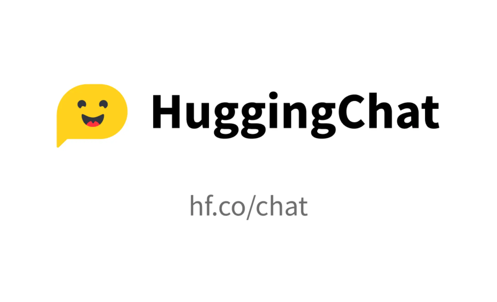
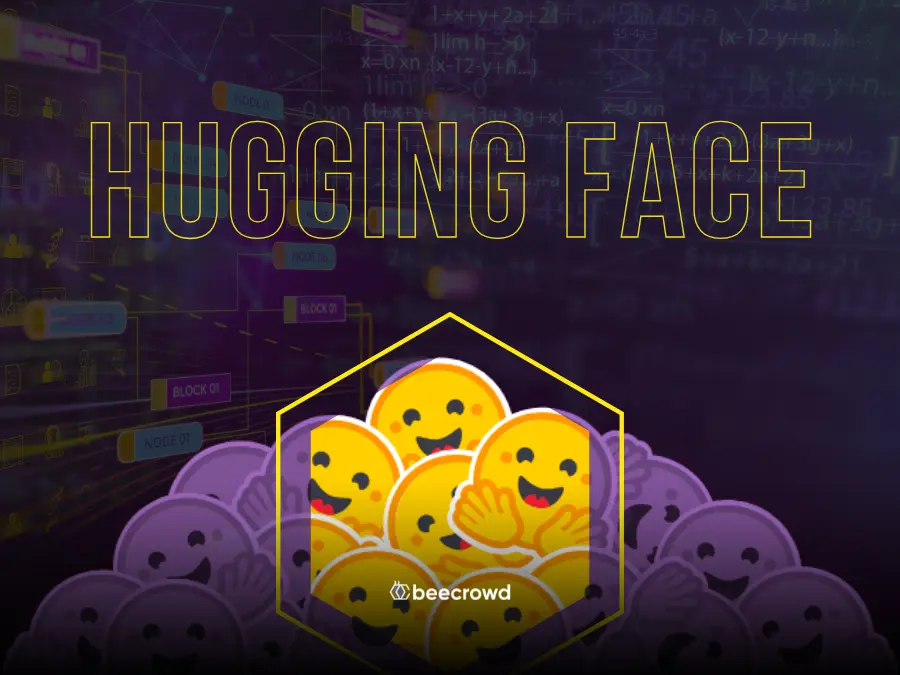
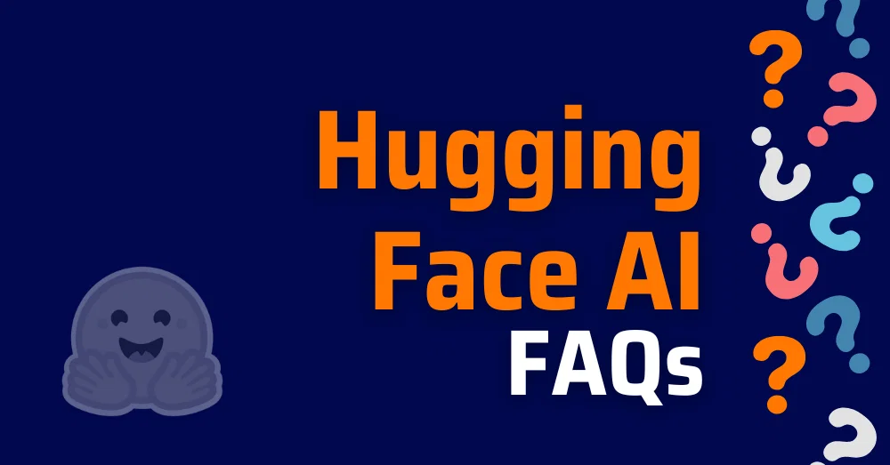

HuggingChat es un asistente basado en modelos abiertos de inteligencia artificial, desarrollado por la comunidad de Hugging Face para conversación, programación y generación de contenido.
Ir a HuggingChat OficialCódigo abierto
Conversación IA
Hugging Face


Interacción natural con diferentes modelos de IA.
Ayuda para generar y explicar código.
Explica conceptos técnicos y académicos.
Basado en tecnologías abiertas para la comunidad.